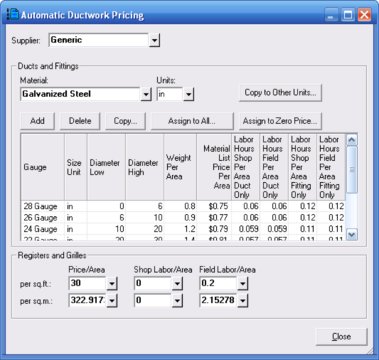
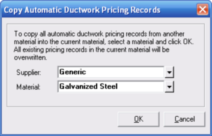

Automatic Ductwork Pricing (Bill of Materials Parts Database Window) |
  
|
Automatic Ductwork Pricing (Bill of Materials Parts Database Window) |
|
To set the parameters for automatic pricing of ductwork parts, from the Bill of Materials Parts Database window click the menu "Part | Ductwork | Automatic Ductwork Pricing." The dialog pictured below will open.

Whenever Bill of Materials encounters a duct or fitting defined in Manual D Ductsize or Tabular Manual D Ductsize that it will add to your project bill of materials it checks to see if the part already exists in the database in the current supplier. If a record for the part already exists it uses it and copies it to the project bill of materials. If it does not exist in the database yet, the part is automatically added to it. The list price, shop labor hours, and field labor hours are assigned automatically, based on the data on the Automatic Ductwork Pricing dialog, pictured above.
Using this dialog is optional. You can instead choose to simply edit the pricing data of individual ductwork parts in your bill of materials database. Or you could edit the pricing data of ductwork parts after they have been added to your project bill of materials.
Supplier: Specifies the supplier to which the set of ductwork pricing data shown on this dialog applies. You can change to a different supplier and enter completely different pricing parameters for that supplier.
Ducts and Fittings
Material: Specifies the duct material to which the pricing data shown within the Ducts and Fittings frame will apply. You can have different pricing data for each material in your database.
Units: Specifies the units for the duct sizes specified in the grid. The choices are "in" for inches or "mm" for millimeters.
Copy to Other Units: Copies all of the pricing data for the current option in the Units input to the other type of units, converting from English to metric or vice-versa. For example, if you enter all of your pricing data in inches, you can click this button to copy all the data to millimeters. All of the sizes and other units-dependent parameters will be converted from English to metric.
Add: Adds a new, blank row of data to the grid below. You can then type your new values for that row into the grid.
Delete: Deletes the current row of data from the grid below.
Copy: Opens the Copy Automatic Ductwork Pricing Records dialog, pictured below. This dialog lets you copy FROM another set of pricing records for a different supplier and/or material INTO the current material. As the dialog says, all of the existing pricing data in the current material will be overwritten with that of the other material.

Assign to All: Assigns the pricing data shown on this dialog to all ductwork parts of the current supplier and material. The pricing data in existing project bill of materials lists you have created in the current project or in other projects will not be affected.
Assign to Zero Price: Searches the database for ductwork part records matching the current supplier and material that have zero for their pricing data, and writes the pricing data shown on this dialog to those parts. This function is the same as the Assign to All function, except prices are only assigned to part records that have zeroes for the pricing data.
Registers and Grilles
Obviously, for each of these inputs there are more factors than just the area that affect the price and the amount of shop and field labor required for registers and grilles. But these inputs are used to generate reasonable, ball park values for these quantities. Once register and grille parts are in the database you should edit the prices and amounts of labor required for each part individually.
Price/Area: These inputs specify the price per area, as defined by the registers width times its height.
Shop Labor/Area: These inputs specify the number of hours of shop labor required for registers and grilles. For manufactured products these inputs should be set to zero.
Field Labor/Area: These inputs specify the number of hours of field labor required per area of the register and grille.
Close: Closes this dialog without making any further changes.